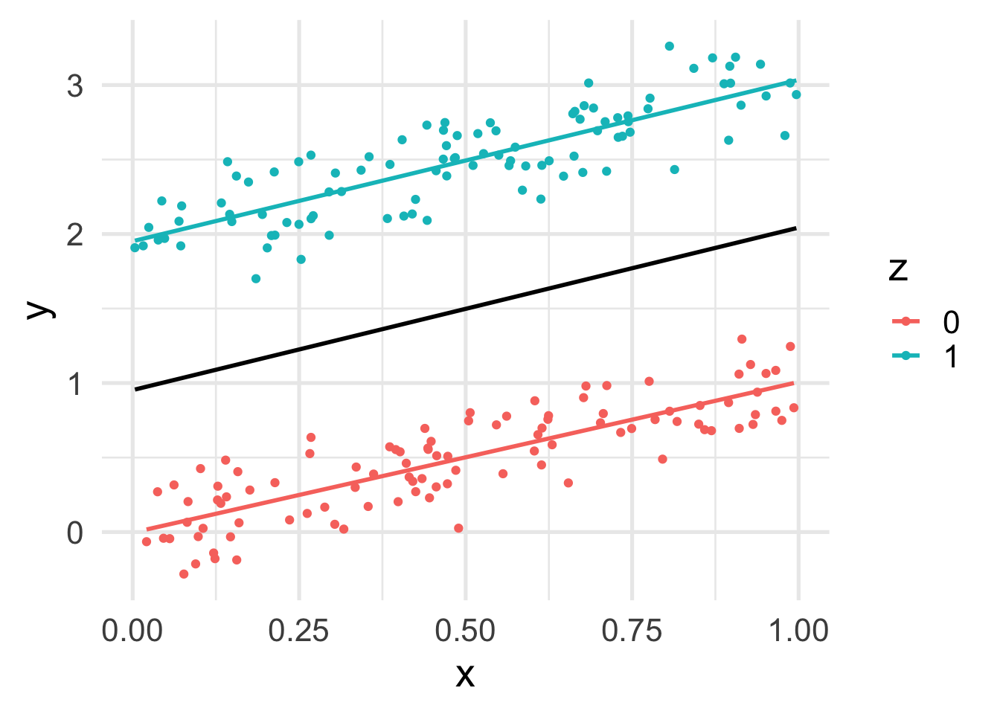
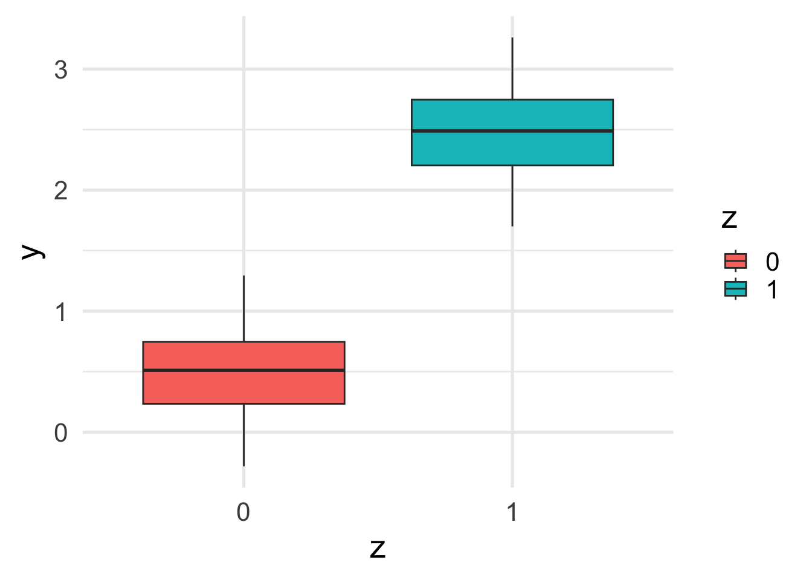
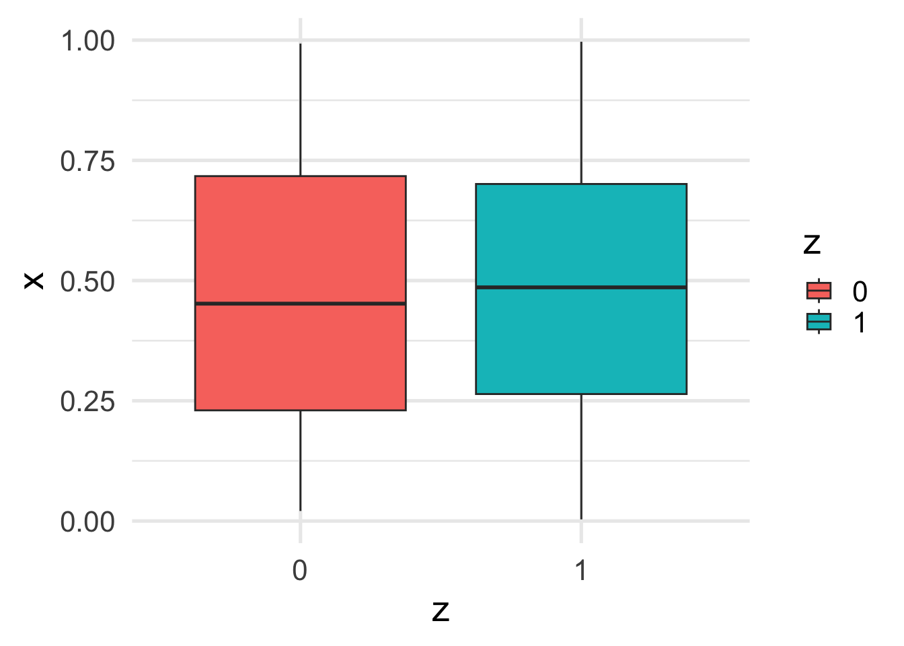
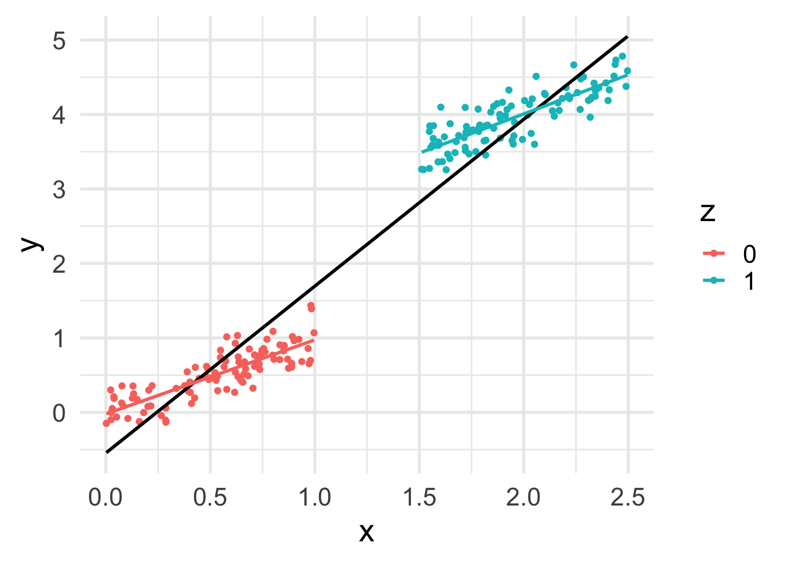
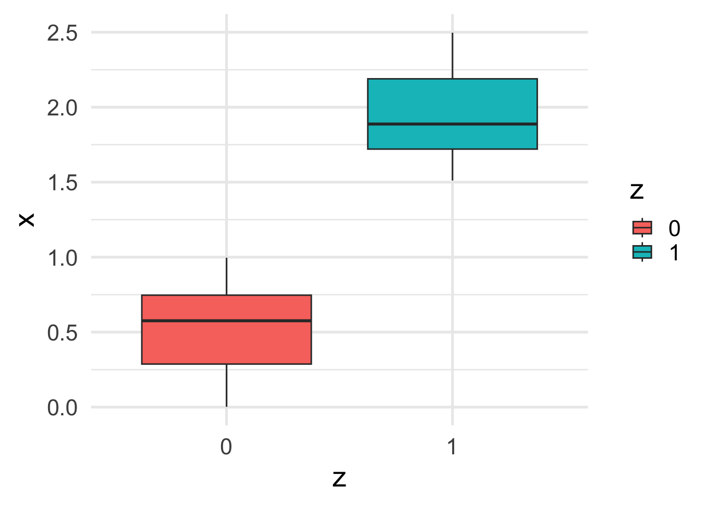
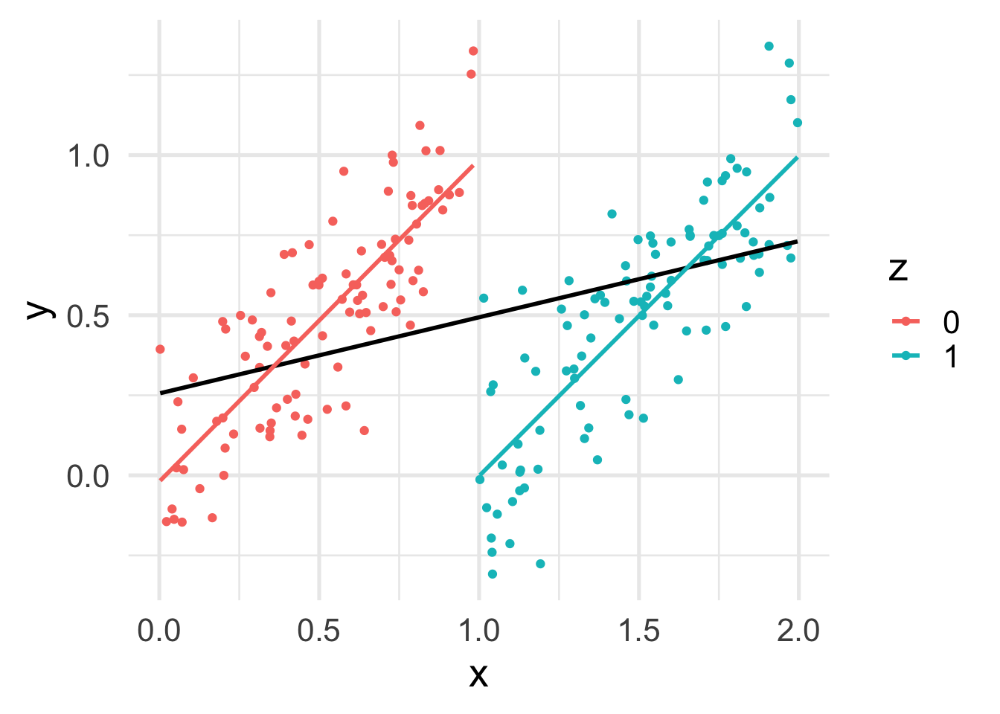
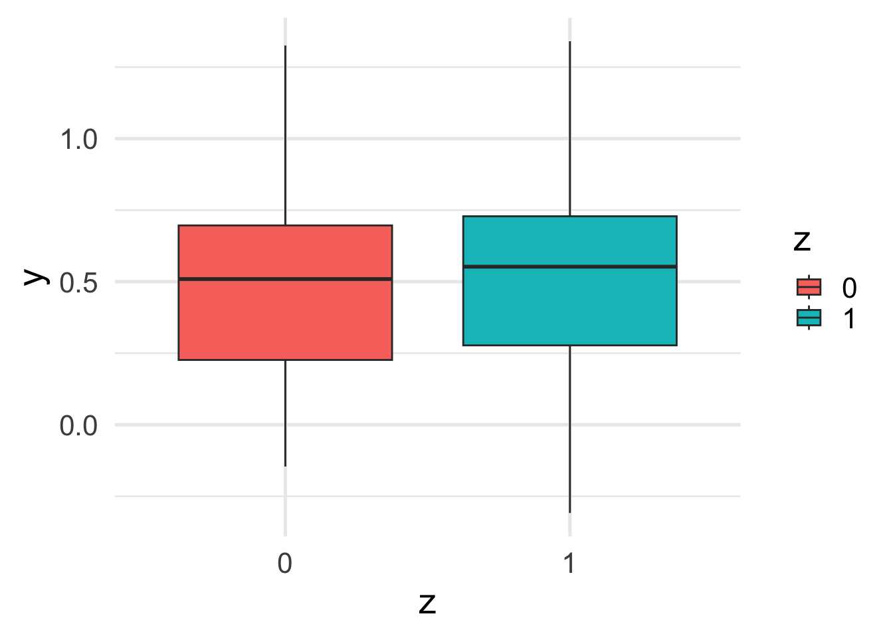
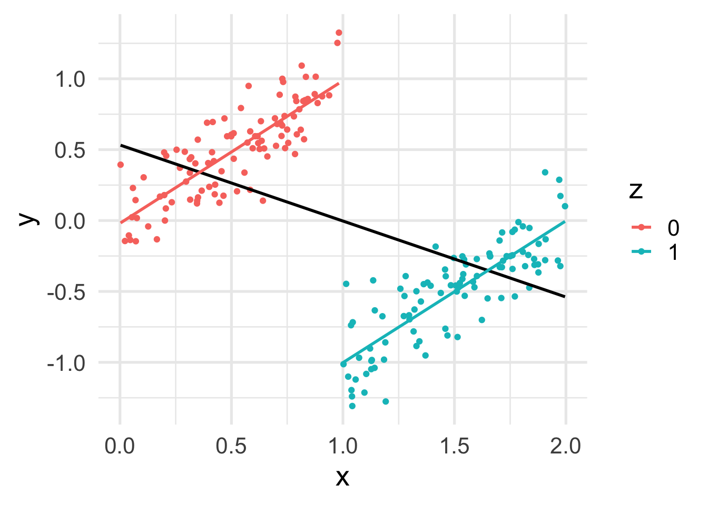

set.seed(1503)
n <- 200
z <- rep(c(0, 1), each=n/2)
x <- runif(n)
beta0 <- 0
beta1 <- 2
beta2 <- 1
sigma <- .2
y <- beta0 + beta1 * z + beta2 * x + rnorm(n, sd = sigma)6 Linear models (part 2)
6.1 Lecture Slides
6.2 Lab: confounding and adjustment 1
In this Lab, we will use simulations to show the effect of modelling choices on inference.
Let’s consider this rather general situation, in which a continuous outcome is influenced by a binary treatment \(z\) (that we are interested in studying) and a continuous confounder \(x\): \[ y_i = \beta_0 + \beta_1 x_i + \beta_2 z_i + \varepsilon_i. \]
Note that here we are using the outcome/treatment/confounder terminology, typical of epidemiology.
6.2.1 Experiment 1
Let’s simulate some data, starting from an ideal situation.
Let’s plot the data.
df <- data.frame(x, y, z=factor(z))
ggplot(df, aes(x = x, y = y, color = z)) +
geom_point() +
geom_smooth(method = "lm", se = FALSE, color = "black") +
geom_smooth(method = "lm", se = FALSE)
Let’s look at the marginal relation between \(y\) and \(z\).
ggplot(df, aes(y = y, x = z, fill=z)) +
geom_boxplot()
:::
Let’s finally look at the relation between \(x\) and \(z\).
ggplot(df, aes(y = x, x = z, fill=z)) +
geom_boxplot()
The marginal relation between \(z\) and \(y\) is consistent with the conditional relation. This is because \(x\) and \(z\) are independent.
Let’s fit a linear model.
fit1 <- lm(y ~ z + x)
summary(fit1)
Call:
lm(formula = y ~ z + x)
Residuals:
Min 1Q Median 3Q Max
-0.4650 -0.1437 -0.0031 0.1498 0.4484
Coefficients:
Estimate Std. Error t value Pr(>|t|)
(Intercept) -0.02005 0.03073 -0.652 0.515
z 1.99099 0.02751 72.385 <2e-16 ***
x 1.04417 0.04888 21.362 <2e-16 ***
---
Signif. codes: 0 '***' 0.001 '**' 0.01 '*' 0.05 '.' 0.1 ' ' 1
Residual standard error: 0.1945 on 197 degrees of freedom
Multiple R-squared: 0.9668, Adjusted R-squared: 0.9665
F-statistic: 2869 on 2 and 197 DF, p-value: < 2.2e-16We can see that the estimates are not far from the true estimated values.
data.frame(estimate = round(fit1$coefficients, 2),
true =c(beta0, beta1, beta2)) estimate true
(Intercept) -0.02 0
z 1.99 2
x 1.04 1What happens if we omit \(x\) from the model?
fit1b <- lm(y ~ z)
summary(fit1b)
Call:
lm(formula = y ~ z)
Residuals:
Min 1Q Median 3Q Max
-0.78648 -0.26678 0.00481 0.26019 0.80658
Coefficients:
Estimate Std. Error t value Pr(>|t|)
(Intercept) 0.48822 0.03533 13.82 <2e-16 ***
z 1.99867 0.04996 40.01 <2e-16 ***
---
Signif. codes: 0 '***' 0.001 '**' 0.01 '*' 0.05 '.' 0.1 ' ' 1
Residual standard error: 0.3533 on 198 degrees of freedom
Multiple R-squared: 0.8899, Adjusted R-squared: 0.8894
F-statistic: 1600 on 1 and 198 DF, p-value: < 2.2e-16In this case the estimate of the coefficient for \(z\) is still good, since \(x\) does not confound the relation between \(z\) and \(y\).
data.frame(estimate = round(fit1b$coefficients, 2),
true =c(beta0, beta1)) estimate true
(Intercept) 0.49 0
z 2.00 26.2.2 Experiment 2
Let’s now include some dependence in the data generation, e.g., by estimating \(x\) differently for the two categories of \(z\).
set.seed(1538)
n <- 200
z <- rep(c(0, 1), each=n/2)
x <- c(runif(n/2), runif(n/2, min = 1.5, max = 2.5))
beta0 <- 0
beta1 <- 2
beta2 <- 1
sigma <- .2
y <- beta0 + beta1 * z + beta2 * x + rnorm(n, sd = sigma)Let’s plot the data.
df <- data.frame(x, y, z=factor(z))
ggplot(df, aes(x = x, y = y, color = z)) +
geom_point() +
geom_smooth(method = "lm", se = FALSE, color = "black") +
geom_smooth(method = "lm", se = FALSE)
Now we can see that, as expected, \(x\) depends on \(z\).
ggplot(df, aes(y = x, x = z, fill=z)) +
geom_boxplot()
This translates into a difference between the marginal and conditional relation between \(z\) and \(y\).
ggplot(df, aes(y = y, x = z, fill=z)) +
geom_boxplot()
Notice the “compound effect” of \(x\) and \(z\) on \(y\).
Let’s fit the correct model.
fit2 <- lm(y ~ z + x)
summary(fit2)
Call:
lm(formula = y ~ z + x)
Residuals:
Min 1Q Median 3Q Max
-0.45873 -0.14348 0.01642 0.12145 0.49850
Coefficients:
Estimate Std. Error t value Pr(>|t|)
(Intercept) -0.03663 0.03300 -1.11 0.268
z 1.99659 0.07518 26.56 <2e-16 ***
x 1.02294 0.04944 20.69 <2e-16 ***
---
Signif. codes: 0 '***' 0.001 '**' 0.01 '*' 0.05 '.' 0.1 ' ' 1
Residual standard error: 0.1988 on 197 degrees of freedom
Multiple R-squared: 0.9874, Adjusted R-squared: 0.9872
F-statistic: 7694 on 2 and 197 DF, p-value: < 2.2e-16As expected, we get good estimates of the coefficients.
data.frame(estimate=round(fit2$coefficients, 2),
true=round(c(beta0, beta1, beta2), 2)) estimate true
(Intercept) -0.04 0
z 2.00 2
x 1.02 1What happens if we now omit the \(x\) confounder?
fit2b <- lm(y ~ z)
summary(fit2b)
Call:
lm(formula = y ~ z)
Residuals:
Min 1Q Median 3Q Max
-0.68982 -0.25933 0.00184 0.25912 0.92836
Coefficients:
Estimate Std. Error t value Pr(>|t|)
(Intercept) 0.50825 0.03533 14.39 <2e-16 ***
z 3.43924 0.04996 68.84 <2e-16 ***
---
Signif. codes: 0 '***' 0.001 '**' 0.01 '*' 0.05 '.' 0.1 ' ' 1
Residual standard error: 0.3533 on 198 degrees of freedom
Multiple R-squared: 0.9599, Adjusted R-squared: 0.9597
F-statistic: 4739 on 1 and 198 DF, p-value: < 2.2e-16We are overestimating the treatment effect!
data.frame(estimate=round(fit2b$coefficients, 2),
true=c(beta0, beta1)) estimate true
(Intercept) 0.51 0
z 3.44 26.2.3 Experiment 3
Things get more complicated when we simulate coefficients with opposite signs.
set.seed(1547)
n <- 200
z <- rep(c(0, 1), each=n/2)
x <- c(runif(n/2), runif(n/2, min = 1, max = 2))
beta0 <- 0
beta1 <- -1
beta2 <- 1
sigma <- .2
y <- beta0 + beta1 * z + beta2 * x + rnorm(n, sd = sigma)Let’s plot the data.
df <- data.frame(x, y, z=factor(z))
ggplot(df, aes(x = x, y = y, color = z)) +
geom_point() +
geom_smooth(method = "lm", se = FALSE, color = "black") +
geom_smooth(method = "lm", se = FALSE)
Now that the effects of two correlated variables are opposite to each other, the marginal effect of \(z\) on \(y\) becomes almost 0.
ggplot(df, aes(y = y, x = z, fill=z)) +
geom_boxplot()
Let’s fit a linear model.
fit3 <- lm(y ~ z + x)
summary(fit3)
Call:
lm(formula = y ~ z + x)
Residuals:
Min 1Q Median 3Q Max
-0.48522 -0.15172 -0.00461 0.14135 0.54230
Coefficients:
Estimate Std. Error t value Pr(>|t|)
(Intercept) -0.01783 0.03188 -0.559 0.577
z -0.98838 0.05627 -17.566 <2e-16 ***
x 1.00277 0.04980 20.138 <2e-16 ***
---
Signif. codes: 0 '***' 0.001 '**' 0.01 '*' 0.05 '.' 0.1 ' ' 1
Residual standard error: 0.193 on 197 degrees of freedom
Multiple R-squared: 0.673, Adjusted R-squared: 0.6697
F-statistic: 202.8 on 2 and 197 DF, p-value: < 2.2e-16Again, the correct model correctly estimates the parameters.
data.frame(estimate=round(fit3$coefficients, 2),
true=c(beta0, beta1, beta2)) estimate true
(Intercept) -0.02 0
z -0.99 -1
x 1.00 1But when omitting \(x\), we lose the significant association between \(z\) and \(y\).
fit3b <- lm(y ~ z)
summary(fit3b)
Call:
lm(formula = y ~ z)
Residuals:
Min 1Q Median 3Q Max
-0.80393 -0.25652 0.04517 0.22719 0.84438
Coefficients:
Estimate Std. Error t value Pr(>|t|)
(Intercept) 0.493279 0.033660 14.655 <2e-16 ***
z 0.002515 0.047602 0.053 0.958
---
Signif. codes: 0 '***' 0.001 '**' 0.01 '*' 0.05 '.' 0.1 ' ' 1
Residual standard error: 0.3366 on 198 degrees of freedom
Multiple R-squared: 1.41e-05, Adjusted R-squared: -0.005036
F-statistic: 0.002792 on 1 and 198 DF, p-value: 0.9579In fact we are overestimating the treatment effect to essentially 0!
data.frame(estimate=round(fit3b$coefficients, 2),
true=c(beta0, beta1)) estimate true
(Intercept) 0.49 0
z 0.00 -16.2.4 Experiment 4
Even more dramatic effects can be observed when the variable of interest is \(x\).
set.seed(1547)
n <- 200
z <- rep(c(0, 1), each=n/2)
x <- c(runif(n/2), runif(n/2, min = 1, max = 2))
beta0 <- 0
beta1 <- -2
beta2 <- 1
sigma <- .2
y <- beta0 + beta1 * z + beta2 * x + rnorm(n, sd = sigma)Let’s plot the data.
df <- data.frame(x, y, z=factor(z))
ggplot(df, aes(x = x, y = y, color = z)) +
geom_point() +
geom_smooth(method = "lm", se = FALSE, color = "black") +
geom_smooth(method = "lm", se = FALSE)
In this case, while the conditional effect of \(x\) on \(y\) is positive, its marginal effect is negative!
Let’s fit a linear model.
fit4 <- lm(y ~ z + x)
summary(fit4)
Call:
lm(formula = y ~ z + x)
Residuals:
Min 1Q Median 3Q Max
-0.48522 -0.15172 -0.00461 0.14135 0.54230
Coefficients:
Estimate Std. Error t value Pr(>|t|)
(Intercept) -0.01783 0.03188 -0.559 0.577
z -1.98838 0.05627 -35.339 <2e-16 ***
x 1.00277 0.04980 20.138 <2e-16 ***
---
Signif. codes: 0 '***' 0.001 '**' 0.01 '*' 0.05 '.' 0.1 ' ' 1
Residual standard error: 0.193 on 197 degrees of freedom
Multiple R-squared: 0.8984, Adjusted R-squared: 0.8974
F-statistic: 870.9 on 2 and 197 DF, p-value: < 2.2e-16Once more, the correct model correctly estimates the parameters.
data.frame(estimate=round(fit4$coefficients, 2),
true=c(beta0, beta1, beta2)) estimate true
(Intercept) -0.02 0
z -1.99 -2
x 1.00 1But when omitting \(z\), we invert the sign of the \(x\) coefficient!
fit4b <- lm(y ~ x)
summary(fit4b)
Call:
lm(formula = y ~ x)
Residuals:
Min 1Q Median 3Q Max
-1.28221 -0.28897 0.04716 0.35760 1.31902
Coefficients:
Estimate Std. Error t value Pr(>|t|)
(Intercept) 0.53271 0.07517 7.087 2.36e-11 ***
x -0.53615 0.06526 -8.216 2.71e-14 ***
---
Signif. codes: 0 '***' 0.001 '**' 0.01 '*' 0.05 '.' 0.1 ' ' 1
Residual standard error: 0.5214 on 198 degrees of freedom
Multiple R-squared: 0.2542, Adjusted R-squared: 0.2505
F-statistic: 67.5 on 1 and 198 DF, p-value: 2.706e-14data.frame(estimate=round(fit4b$coefficients, 2),
true=c(beta0, beta2)) estimate true
(Intercept) 0.53 0
x -0.54 16.3 Homework 2
Wolff and Gorb (2013) studied the different frictional coefficients on the different legs of a spider.
Please, read the article, with particular focus on the analysis described in its Figure 4.
Briefly, the goal is to compare the pulling and pushing motions of different leg pairs.
Load the data available in this csv file.
Perform the following analyses:
Visual inspection of the data: use a boxplot or similar plot to compare the distribution of the different forces (pull and push) and legs.
Specify a linear model with
frictionas response andtypeas covariate. What is the effect of the force type on friction?Specify a linear model with
frictionas response andtypeandlegas covariates. What is the effect of the force type on friction? Did it change compared to the previous model? What is the effect ofleg?Specify a contrast to compare leg pairs L3 and L2. Is the difference in friction significant?
Specify a linear model that includes, in addition to the two covariates, their interaction. Is the interaction significant? How do you interpret the coefficients?
Specify a contrast to compare the push and pull force of leg L2. Is the difference significant?
6.4 Further reading
- R. A. Irizarry and M. I. Love. Data Analysis for the Life Sciences
References
This lab was inspired by Regression Models for Data Science in R↩︎
This homework is from Data Analysis for the Life Sciences. Please try to solve this yourself before looking at the solution there.↩︎